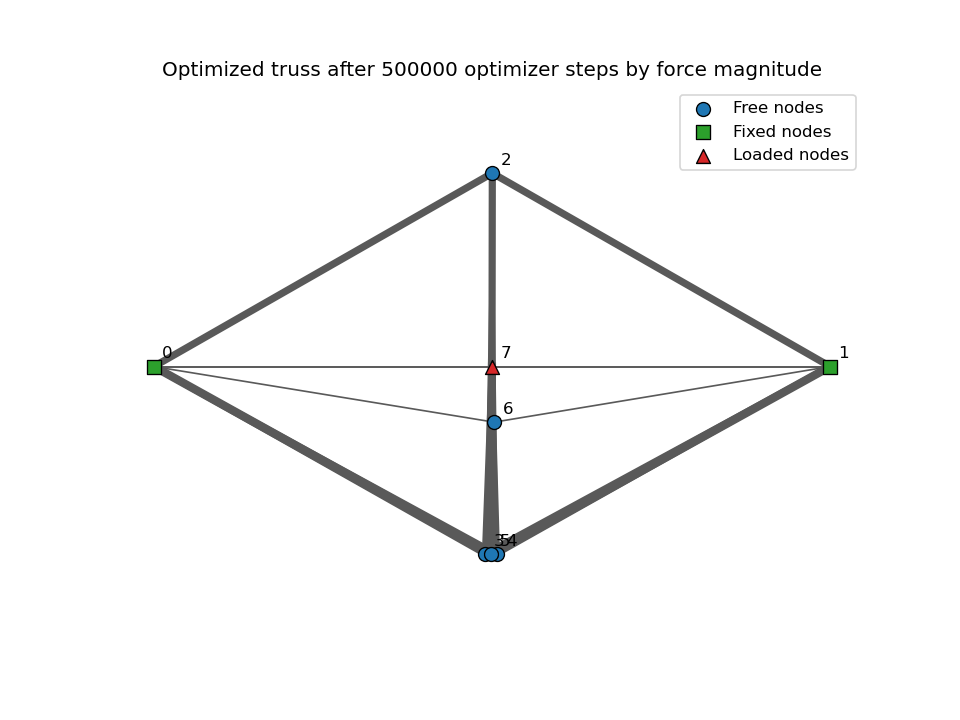

Machine learning and structures
Spaceframe Topology Optimization
Built and visualized a physics-informed optimization workflow for 2D truss geometry, balancing equilibrium residuals against structural mass.
See projectMechatronics | Robotics | Automation
Engineer building practical hardware, software, and manufacturing systems where mechanical design, controls, and embedded implementation meet.
Profile

I work across mechanical design, embedded systems, controls, and automation to turn ambiguous problems into testable, buildable systems. My background combines engineering project work, Boeing exposure, and military service, giving me a practical bias toward reliability, documentation, and execution.
I am strongest where physical systems need thoughtful software: robotics, sensor integration, manufacturing tools, mechanism testing, and data-driven engineering workflows.
Selected Work

Machine learning and structures
Built and visualized a physics-informed optimization workflow for 2D truss geometry, balancing equilibrium residuals against structural mass.
See projectCapstone engineering
Capstone work focused on mechanism behavior, material processes, actuation testing, and automation documentation.
See project
Web tool and 3D printing
Web app concept that converts uploaded images into voxelized 3D color-by-number models for STL export and 3D printing workflows.
Try it
Robotics integration
Undergraduate sensors and actuators project covering sensor selection, actuation, ArduPilot, Raspberry Pi and Arduino integration, GPS, and remote communication.
Toolkit
CAD, mechanism design, prototyping, material-process thinking, test fixtures.
C/C++, microcontrollers, sensor integration, PID fundamentals, actuation systems.
Python, JavaScript, numerical modeling, visualization, automation scripts, technical documentation.
Automation workflows, practical build constraints, process improvement, reliability-minded execution.
Background
Connect
I am interested in mechatronics, robotics, automation, manufacturing, and hardware-software integration roles.